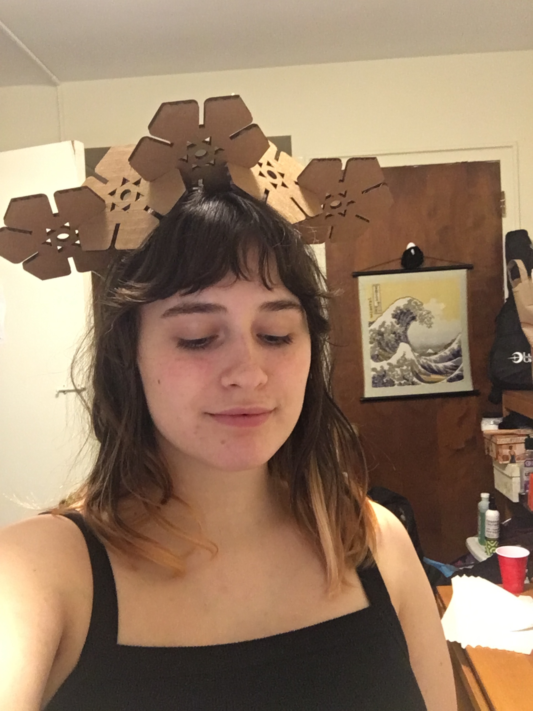

Using Fusion 360, I created a hexagonal design, and then added notches, then fillets (for a nicer fit), in order to piece together multiple iterations of the shape. This meant creating a design (for polygons, press s then type polygon), extruding the design to add depth, pressing f and setting a radius for the fillets, then projecting the face of the shape. To make the inner design, I created a triangle and then used circular pattern as I did with notches to create a symmetry. Then I modified the rotation to achieve the specific design pictured.

My first attempt, with notches set to thick-kerf (4.4 - .2), I printed two tester pieces, and they fit very loosely and would not hold.

I measured the thickness and got a value closer to 4.2, so I adjusted my thickness to 4.2. The results were wonderful, and the pieces held together tight enough to be held connected without falling apart.

I printed out a total of 5 pieces, and put them together.
I arranged them in a new pattern, and was able to balance them on my head.